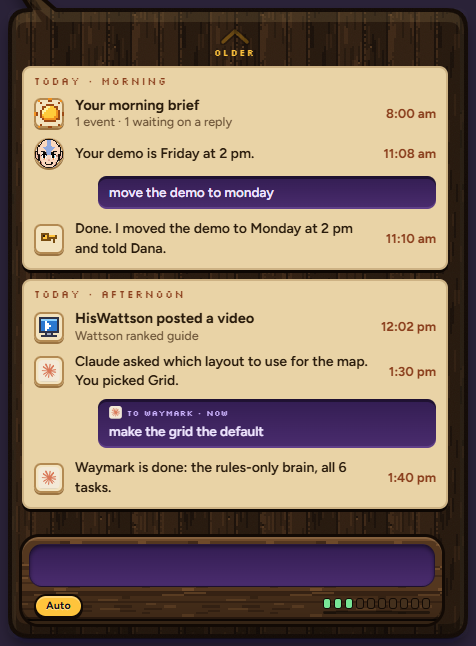
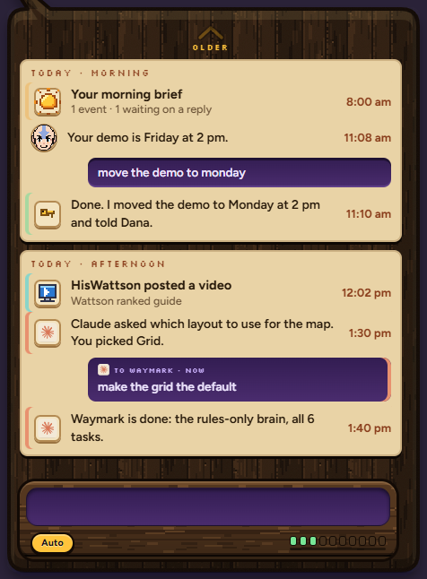
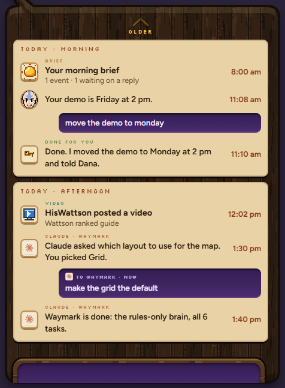
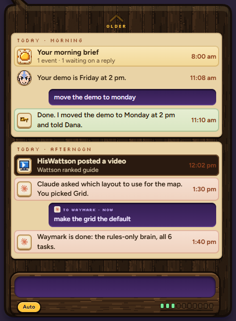
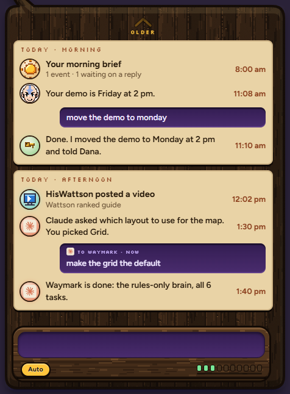

Same conversation, five ways. Every card keeps the same shape and wood; what changes is how much it tells you what kind of thing it is before you read it. In all of them Claude's rows now wear Claude's real icon and actions Aang did for you get a small gold key (today both show Aang's face).
A · ICONS ONLY

The quietest. Only the little picture on the left changes. You learn the icons; nothing else moves.
B · COLOURED EDGE

Icons, plus a thin coloured stripe down the left of each kind. Scannable from the corner of your eye, still calm.
C · LITTLE LABEL

Icons, plus a tiny carved label above the words: CLAUDE · WAYMARK, VIDEO, DONE FOR YOU, BRIEF. Says it in words; takes a little more room.
D · DIFFERENT PAPER

Each kind on its own tinted slip: Claude warm terracotta, done-for-you sage, videos dark wood, the brief honey. The strongest difference; busiest.
E · GLOWING SEAL

The icon becomes a round seal in the kind's colour with a soft glow, like the marks over Aang's head. Matches the mark colours, so the same colour means the same thing everywhere.
These stack: for example B + C (edge and label), or E + B (seal and edge). Tell me a letter, or two.